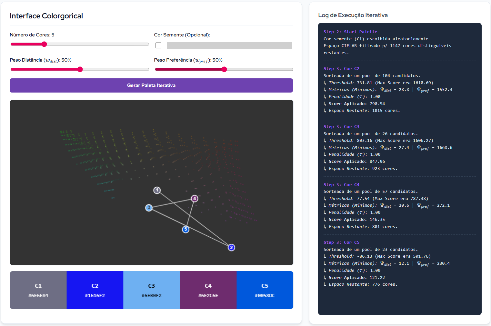
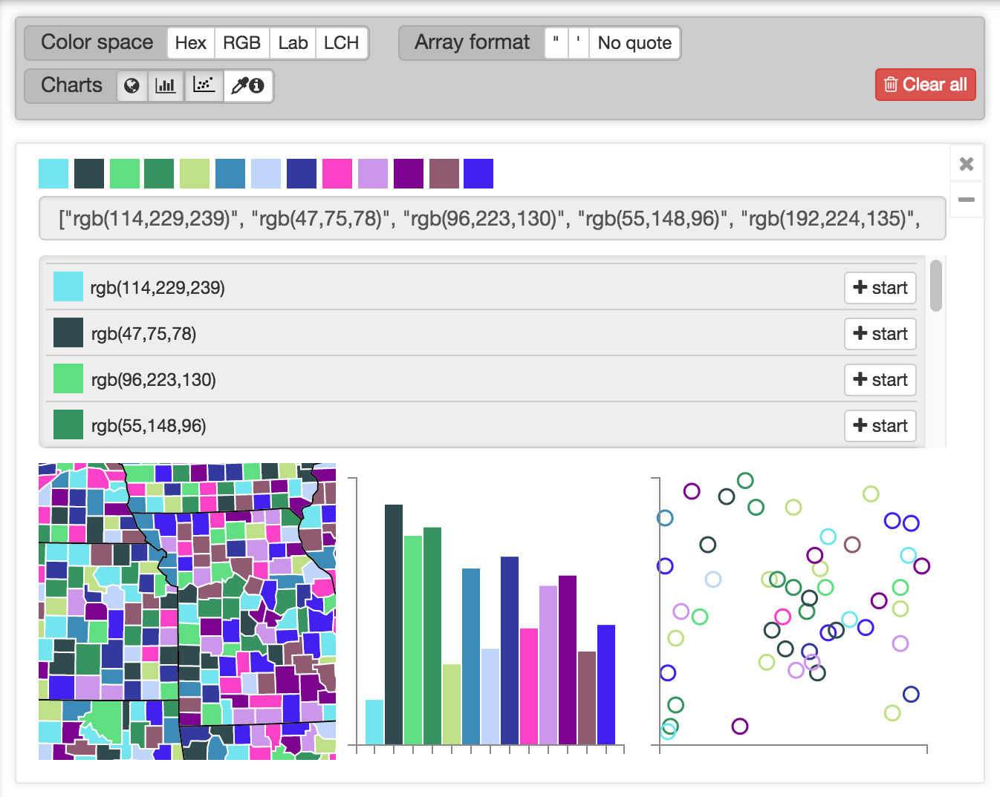
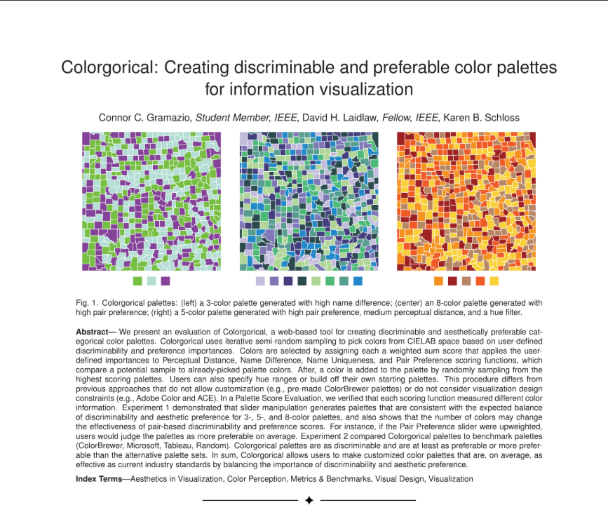
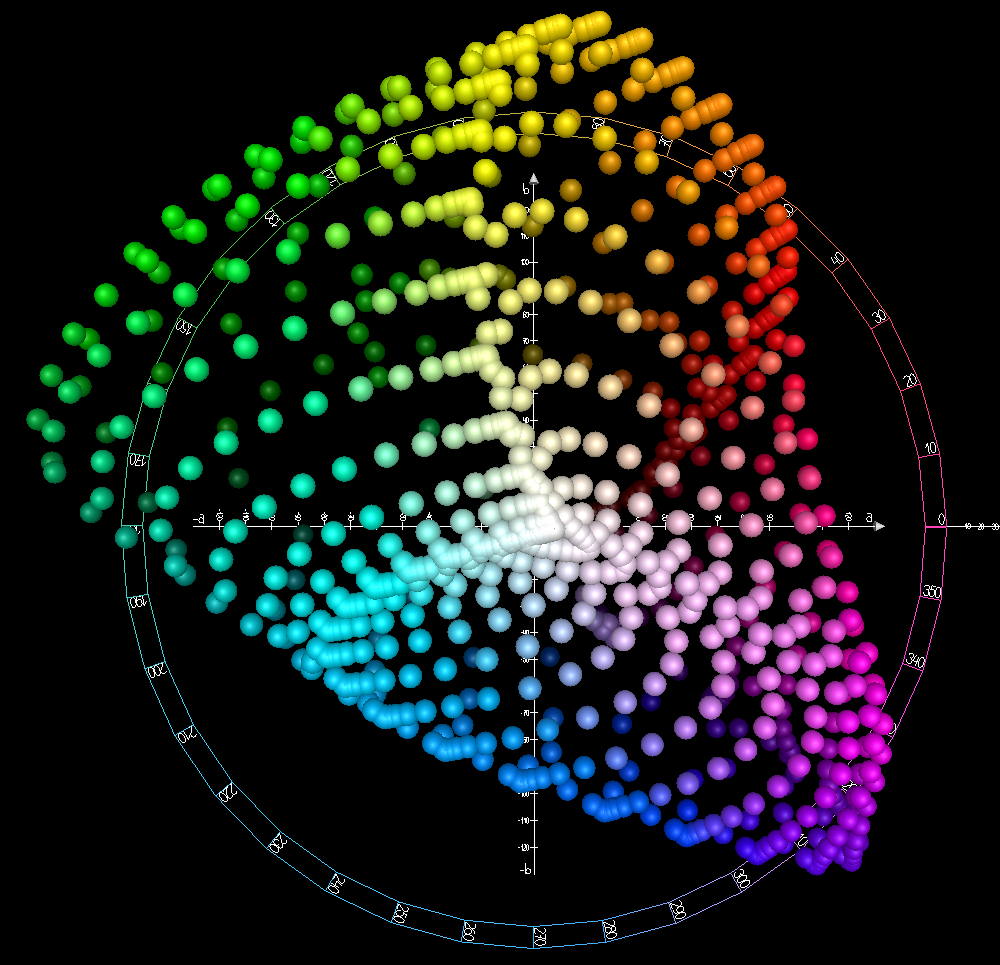
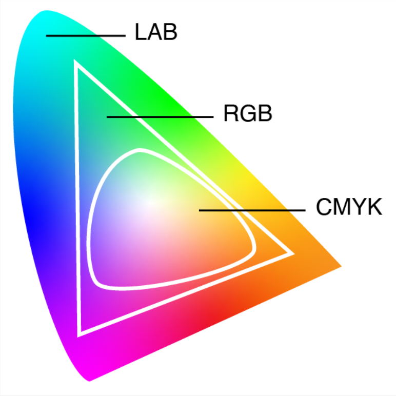

Na área de visualização de dados categóricos é necessário que a paleta de cores, além de esteticamente agradável, seja altamente discriminável, isto é, que as cores sejam facilmente distinguíveis entre si.
Encontrar esse balanço entre estética e discriminabilidade é um desafio, já que essas métricas podem ser inversamente proporcionais.

Esse trade-off é trabalhado na plataforma Cologorical e avaliado no artigo Colorgorical: Creating discriminable and preferable color palettes for information visualization. Uma paleta de cores é construída com base em funções de score para cores, descritas a seguir.


Utilizada para medir a diferença visual entre duas cores. Diferente da distância Euclidiana simples ($\Delta E_{76}$), a norma $DE00$ aplica correções para luminosidade, croma e matiz, além de um termo de rotação ($R_T$) para melhorar a uniformidade perceptiva.
Mede a probabilidade de duas cores serem confundidas linguisticamente. Utiliza a distância de Hellinger sobre distribuições de associação entre cores e nomes populares (ex: "azul claro" vs "turquesa").
Indica o quão "único" é o nome de uma cor. Cores com nomes focais e bem definidos pontuam baixo, enquanto cores com nomes ambíguos ou distribuídos pontuam alto (entropia negativa).
Modelo de preferência estética baseado em regressão linear. Recompensa pares que contenham cores "frias" ($\kappa$), alto contraste de luminosidade ($\Delta L$) e similaridade de matiz ($\Delta H$).
O CIELAB (ou $L^*a^*b^*$) é um espaço de cores projetado para ser perceptualmente uniforme. Ao contrário do RGB, uma alteração numérica de "10 unidades" no CIELAB corresponde à mesma magnitude de alteração visual percebida pelo olho humano, independentemente da cor.
Ele é estruturado em três eixos tridimensionais:

O espaço sRGB nativo é dependente do dispositivo e geometricamente distorcido. A distância matemática entre dois códigos RGB não reflete a verdadeira distância visual humana.
Já que espaços como o CMYK ou RGB são subconjuntos limitados (gamas menores) em comparação com o LAB, o algoritmo converte primeiro as cores geradas para CIELAB para garantir que o cálculo de contraste ($\Delta E_{00}$) represente a percepção humana real.

Passo 1: Expansão Gamma (Transformar sRGB em RGB Linear)
$$ C_{linear} = \begin{cases} \frac{C_{sRGB}}{12.92}, & \text{se } C_{sRGB} \le 0.04045 \\ \left(\frac{C_{sRGB} + 0.055}{1.055}\right)^{2.4}, & \text{se } C_{sRGB} > 0.04045 \end{cases} $$*Onde $C$ representa cada canal de cor ($R$, $G$ ou $B$) normalizado entre 0 e 1.
Passo 2: Conversão Linear RGB para CIE XYZ (Usando o Iluminante Padrão D65)
$$ \begin{bmatrix} X \\ Y \\ Z \end{bmatrix} = \begin{bmatrix} 0.4124 & 0.3576 & 0.1805 \\ 0.2126 & 0.7152 & 0.0722 \\ 0.0193 & 0.1192 & 0.9505 \end{bmatrix} \begin{bmatrix} R_{lin} \\ G_{lin} \\ B_{lin} \end{bmatrix} \times 100 $$Passo 3: Conversão CIE XYZ para CIELAB
$$ L^* = 116 \cdot f\left(\frac{Y}{Y_n}\right) - 16 $$ $$ a^* = 500 \cdot \left[ f\left(\frac{X}{X_n}\right) - f\left(\frac{Y}{Y_n}\right) \right] $$ $$ b^* = 200 \cdot \left[ f\left(\frac{Y}{Y_n}\right) - f\left(\frac{Z}{Z_n}\right) \right] $$A função de transformação não-linear $f(t)$ e os brancos de referência ($X_n, Y_n, Z_n$) são definidos como:
$$ f(t) = \begin{cases} \sqrt[3]{t}, & \text{se } t > 0.008856 \\ 7.787 \cdot t + \frac{16}{116}, & \text{se } t \le 0.008856 \end{cases} $$A inicialização carrega o espaço de cores CIELAB. Para garantir que a ferramenta seja rápida e interativa, o algoritmo utiliza uma amostragem inicial mais espaçada, evitando o processamento excessivo ao pré-calcular as preferências de pares.
O modelo restringe os candidatos às cores altamente preferíveis usando um limiar estatístico baseado no desvio padrão ($SD$), removendo opções com pontuações muito baixas.
Por fim, estabelece-se a regra de diferença perceptível de Stone et al.: para as cores serem distinguíveis, a distância entre elas deve superar valores específicos em pelo menos um dos três eixos CIELAB.
A primeira cor da paleta é selecionada ao sortear aleatoriamente uma "semente" a partir do subconjunto de cores que sobreviveram aos filtros da inicialização.
Caso o utilizador forneça a sua própria cor inicial explicitamente, a etapa de sorteio é ignorada e essa cor torna-se o ponto de partida absoluto.
Após a definição da primeira cor ($P_1$), o algoritmo varre o espaço disponível e elimina todas as cores vizinhas consideradas indistinguíveis em relação à semente.
Para adicionar uma nova cor, o algoritmo avalia os candidatos calculando a sua pontuação mínima com as cores já presentes na paleta, com base nos pesos definidos pelo usuário.
Após aplicar uma penalização para evitar tons amarelo-escuros, a nova cor é sorteada aleatoriamente entre as opções com melhor pontuação (acima de um limiar).
Por fim, as opções muito semelhantes à cor escolhida são descartadas para manter o contraste visual.